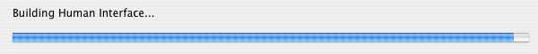
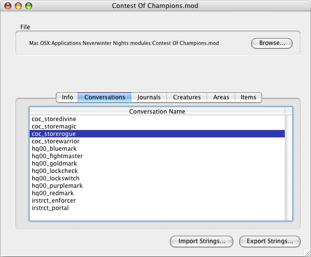
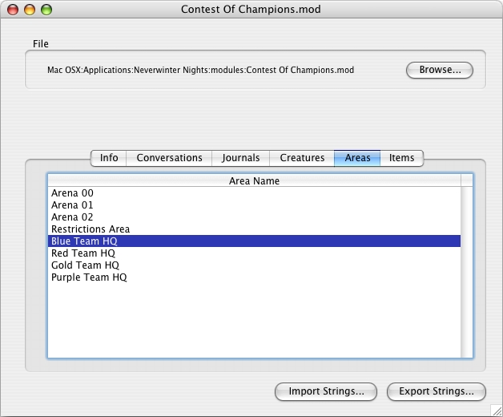

Brought to you by Souricette, last update: 2005-03-12
Current version: 2.0.1
Download NWN Tool, version 2.0.1 for Macintosh (version MacOS X)
Download NWN Tool, version 2.0.1 for Windows
Download NWN Tool Sources, version 2.0.1 (REALbasic project)
Download NWN Tool Documentation (this html page)
What is it???
NWN Tool is a MacOS X and Windows Application which lets you do various things on Neverwinter Night's files (modules, haks, .erf files and .nwm files):
New for version 2.0:
New from version 2.0.1:
WARNING: This application will NOT let you ADD new things in a module (you still need Aurora Toolset for that), it will "only" enable you to edit existing things and create new localizations for existing things.
WARNING FOR WINDOWS USERS: This application is developed on Macintosh. All the layouts of the windows are created on these computers, and "uglily" used for Windows target. That's why you will probably consider that application as "badly designed", because you are likely to find weird button or text positionning - well, that's the price to have a Windows version...
Quick User's Guide
When you first launch the application, you are asked to indicate the path to your Neverwinter Night folder:
Once this is done, you reach the Main Window:
As soon as you launch the application, "NWN Tool" starts to load the game resources in the background - you don't see it, but it does!
While these resources are not loaded, you will not be able to edit a character or view the minimaps of a module: instead, a loading progressbar will be displayed and, as soon as the resources are loaded, you will be able to benefit these features!
You can use the "Open file..." button, or the "Open..." menu item of the "File" menu to open a file and work on it.
Select a module, a hak file, a .erf or a .nwm file (Neverwinter Night's campaign file), and wait while the application is loading the file (it may be time-consuming...)
Once the file has been read, the application prepares the different panels:

And, eventually, everything has been loaded!

This Panel lists all the different Conversations you have in the open file.
By double-clicking on one of the lines, you will open the Conversation Window:
The conversation element displayed are the english ones if they are present.
You can edit these elements from that window.
This Panel lists all the different Journal entries you have in the open file.
By double-clicking on one of the lines, you will open the Journal Window:
For a given Journal entry, you will be able to edit all the corresponding possibilities. Again, the English strings are the ones displayed there.
This Panel lists all the different Creatures or NPCs you have in the open file.
By double-clicking on one of the lines, you will open the Creature Window:
For a given Creature or NPC, you will be able to edit its name, as well as the description shown by examinating it. Again, the English strings are the ones displayed there.

This Panel lists all the different Area names you have in the open file.
By double-clicking on one of the lines, you will be able to edit that Area name:
Again, the English strings are the ones displayed there.
This Panel lists all the different Items you have in the open file.
By double-clicking on one of the lines, you will open the Item Window:
As you can see, you will be able to edit the name of the item, as well as its description when identified and not identified. Again, the English strings are the ones displayed there.
This is the most interesting feature of "NWN Tool". You can export all the strings present in a module (or a hak file) in a Text file, which you will be able to edit using any Text Editor outside of the application, and then reimport that text file with all the changes in it.
The Export text will contain blocks of text like that (colorized for the needs of that documentation):
<Conversation resref="coc_storedivine">
<Entry index="0">
<CExoLocStringText language="0">
Greetings! Welcome to the Divine store... what would you like to purchase?
</CExoLocStringText>
</Entry>
<Reply index="0">
<CExoLocStringText language="0">
I would like to see your wares
</CExoLocStringText>
</Reply>
</Conversation>
The lines displayed in dark blue are the editable parts of that file. You can change everything present between the <CExoLocStringText> and </CExoLocStringText> tags!
The lines in dark green MUST NOT BE CHANGED! They are needed to determine what part of the module these strings refer to...
IMPORTANT: all the tags should be on a single line! You can't do things like <CExoLocStringText language="0">blabla</CExoLocStringText> on a single line, the Import parser would not recognize such presentation... But the text between the <CExoLocStringText> and </CExoLocStringText> MAY be on more than one line, though - but at least on one line...
The Export file regroups the different kind of blocks by areas (the Conversations are grouped together, the Creatures too, etc...). But the Import parser doesn't care about the order of these blocks. But something is REQUIRED: the resref attribute specifies a given block (a conversation, a creature, etc...), and such information MUST be present in the module when you reimport your file in the module! It means that it is strongly recommended not to change your module between the Export and the Import phases...
The language values are the following ones:
0: English string for masculine or neutral characters
1: English string for feminine characters
2: French string for masculine or neutral characters
3: French string for feminine characters
4: German string for masculine or neutral characters
5: German string for feminine characters
6: Italian string for masculine or neutral characters
7: Italian string for feminine characters
8: Spanish string for masculine or neutral characters
9: Spanish string for feminine characters
10: Polish string for masculine or neutral characters
11: Polish string for feminine characters
256: Korean string for masculine or neutral characters
257: Korean string for feminine characters
258: Chinese Traditional string for masculine or neutral characters
259: Chinese Traditional string for feminine characters
260: Chinese Simplified string for masculine or neutral characters
261: Chinese Simplified string for feminine characters
262: Japanese string for masculine or neutral characters
263: Japanese string for feminine characters
The masculine strings are the ones displayed to a Masculine character, and the feminine... Well, I will let you guess! The order the game looks for string is depending on the version of your application. It may be changed in one of the INI file - I don't know which one...
Use the "Export Strings..." button on the File window to have the Export window displayed:
As you can see, many options are available. Let's explain them.
This option exports all the strings from your file in the Text file. Nothing special to say...
Nothing special to say for that option too!
This is certainly the most interesting option... The Export file will contain all the strings of the <Based on> language, all the strings of the <Language to create> language, and will CREATE all the strings which exist in the <Based on> language but not in the <Language to create> one. The Export file will look like that:
<Conversation resref="coc_storedivine">
<Entry index="0">
<CExoLocStringText language="0">
Greetings! Welcome to the Divine store... what would you like to purchase?
</CExoLocStringText>
<CExoLocStringText language="2" inserted="TRANSLATE_MASCULINE">
Greetings! Welcome to the Divine store... what would you like to purchase?
</CExoLocStringText>
</Entry>
<Reply index="0">
<CExoLocStringText language="0">
I would like to see your wares
</CExoLocStringText>
<CExoLocStringText language="2" inserted="TRANSLATE_MASCULINE">
I would like to see your wares
</CExoLocStringText>
</Reply>
</Conversation>
If you compare this to the sample shown at the beginning of that chapter, you will notice that there are 2 new strings in that block, with the same content than the english one.
Both of them are marked with a inserted="TRANSLATE_MASCULINE" attribute. This is to ease the search for strings which have been added by the Export engine, from the ones originally present in the module. The inserted attribute would not be present if the string was already in the module!
You can notice the format used: you may add as many <CExoLocStringText language="xxx"></CExoLocStringText> in a block, as long as they are in the same group, one following each other (remember to skip a line between all these information!).
This is mainly used for non-english modules... If you are playing a feminine character, the way the game looks for strings is the following one:
Here is the problem: if you are playing a feminine character in french and the string is not present, you will not see the french masculine one, but the english one!!! That's not good...
It means that you are forced to have all the french masculine strings present also for the feminine, even if they are the same... That's the reason of that option.
Att the inserted strings will be referred by the inserted="CREATE_FEMININE" attribute in the Export file.
It is as simple as clicking on the "Import Strings" button and selecting the previously exported file... The Import engine will read the file, line by line, and try to recognize blocks of data related to a given string. When the Import is finished, you only have to save your module, and the strings present in the Export file will have replaced the ones already present, and new languages may have been added to existing strings...
But remember one thing: you CAN'T create new conversations, or areas, you can only add new languages to existing strings!
From the 2.0 version, you can now edit a .bic file.
Open the file from the Main window, and select the module you use to play that character in the "Module" popup - this will load in memory all the resources of that module (so that, for example, the given races of thes emodules can be selected), and edit your data.
IMPORTANT: the data are extracted directly from the game resource files. It means that many strings displayed in that window will be dependent on the localization of your game: for example, all the screenshots have been done using the french version of NWN: that's why many things are displayed in french!
In the Appearance panel, you can select a new portrait by clicking on the "Set" button. A window like that one will be displayed:
All the images displayed are DEPENDENT on the Gender and the Race of your character! Note that using some "strange" genders (like "None", or even "Both"!) can show new portraits you are not used to see...
You can also listen to all the voices of your character, by clicking on the "Try" button on that panel.
In the "Skills" window, double-clicking on a skill row will enable you to edit the value of your skill:
IMPORTANT: the "Feats" are not loaded in memory, because it takes time to load them. Depending to your machine, many time... So, if you want to edit the Feats of your character, you can click on the "Load Feats" button to proceed to the Feats loading - you will then have access to the Feats editing feature!
New from the 2.0.1 version, you can now export a .bic file tyo a text file, to share with others the way your character was built!
On the Saved Characer window, yo now have a "Export Character Sheet..." button. By clicking on that button, you will create a text file containing details on your character: the final abilities, classes, skill points, etc... And for each level your character has, it describes the choices you made: the selected class, skills, feats, etc...
IMPORTANT: if, on your Character window, you did not load the Feats, all Feats information will be shown as "not loaded".
The generated Export text file is based on a template file: a text file describing how to generate the different information! The format of that "Export template file" is described there.
2005-03-12 - 2.0.1
- Fix "Feat editing" bug (adding a new feat would generate an OutBfBound exception on save)
- Added "Export Character Sheet" button on the Character window
- Fixed the "gold > 1000000" symptom, where the amount was incorrectly displayed
- We no more parse the "override" folder when we are using the "Default" module
- Fixed racial abilities adjustment on Character window (abilities were not showing the racial adjustment)
- Fixed empty lines handling when parsing 2da files
- Added Campaign (.nwm) files in the list of modules for the Minimap Viewer window
- Original, SOU and HotU campaign (.nwm) strings are now correctly extracted
- Original, SOU and HotU campaign (.nwm) files are viewable/exportable, but no more editable
2005-02-01 - 2.0
- Added bic editing and minimap viewer
- Fixed various bugs in GFF engine
2004-10-06 - 1.0
- First public release